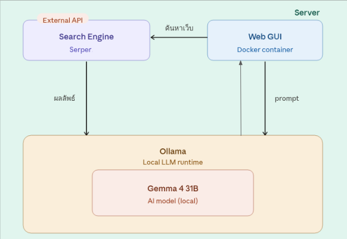
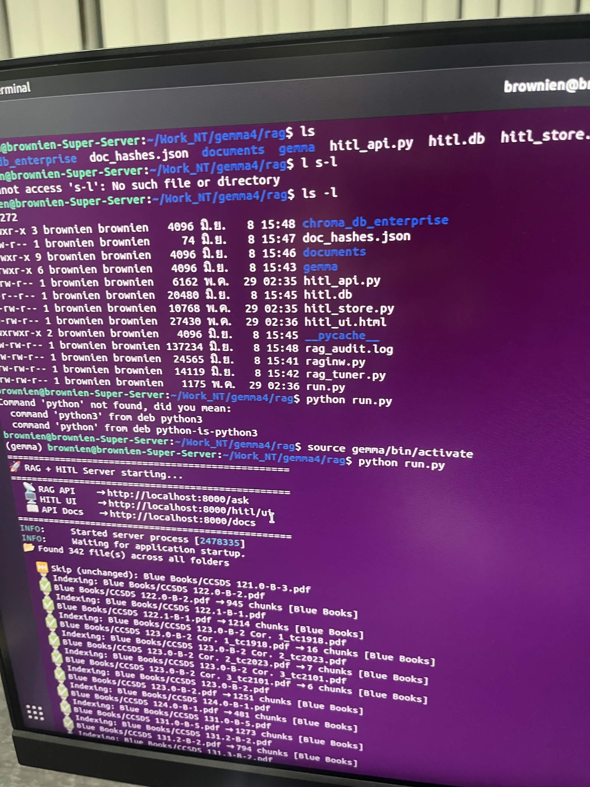
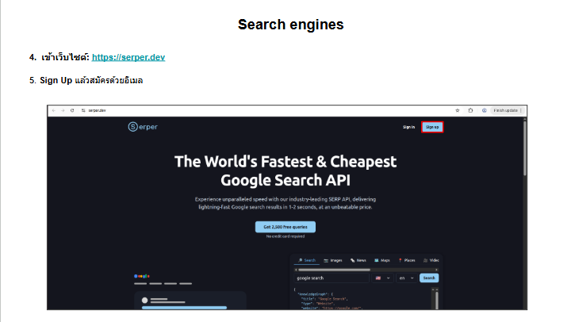
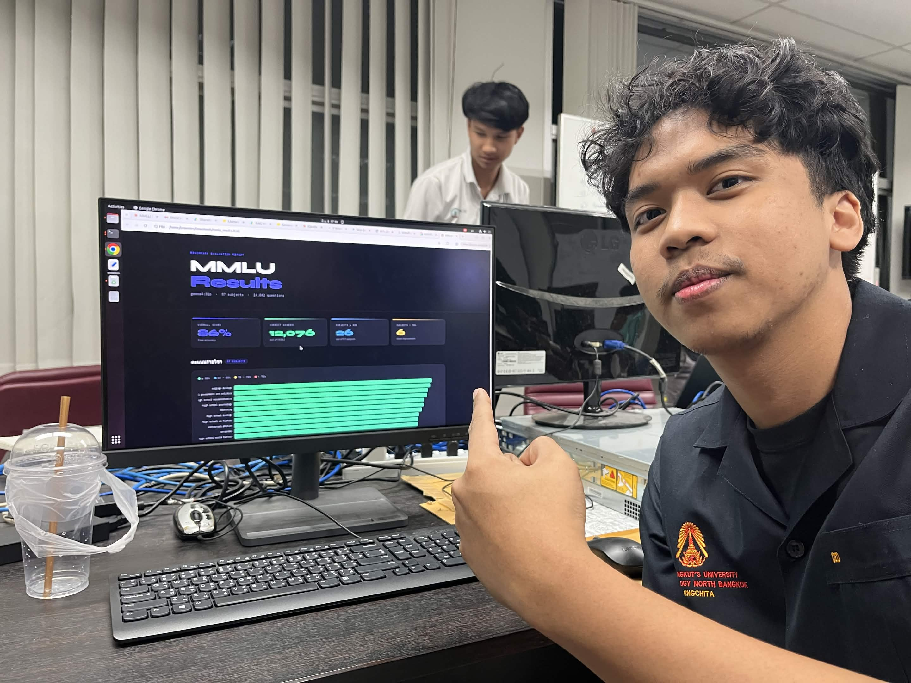

สถาปัตยกรรมการติดตั้งและปรับจูนโมเดลภาษาขนาดใหญ่ (LLM) ให้ทำงานแบบออฟไลน์ พร้อมระบบดึงข้อมูลจากเอกสารและอินเทอร์เน็ต
Core Objective
ติดตั้งโมเดล Gemma4 31B ให้อยู่บน Local Server และสร้างระบบถาม-ตอบจากเอกสาร PDF ขององค์กร
Technology Stack
Ollama / Docker (Open WebUI) / ChromaDB / Serper API / Python
Key Outcome
ระบบ AI ที่สามารถอ่านไฟล์ ค้นหาเว็บ และทำงานได้ 100% Offline
ใช้ Ollama ดาวน์โหลดโมเดล Gemma4 31B มาติดตั้งบนเครื่อง และใช้ Docker ในการรันหน้าต่างแชท Open WebUI เพื่อให้ใช้งานง่ายเหมือน ChatGPT
พัฒนาระบบ RAG (Retrieval-Augmented Generation) โดยตัดคำใน PDF (Chunking) แปลงเป็น Vector เก็บใน ChromaDB เพื่อให้ AI ค้นหาและตอบคำถามจากไฟล์บริษัทได้
เชื่อมต่อ Serper API ให้ AI สามารถดึงข้อมูล Real-time จาก Google ได้ และทดสอบประสิทธิภาพโมเดลด้วยมาตรฐาน MMLU Benchmark

Figure 3.1: แผนภาพโครงสร้างการทำงานระหว่าง Ollama และ Open WebUI

Figure 3.2: การสร้าง Workspace และระบบ RAG สำหรับอ่านไฟล์เอกสาร

Figure 3.3: การตั้งค่า Serper API เพื่อเชื่อมต่อระบบค้นหา (Web Search)

Figure 3.4: ผลการทดสอบโมเดลด้วยชุดข้อมูล MMLU Score Comparison